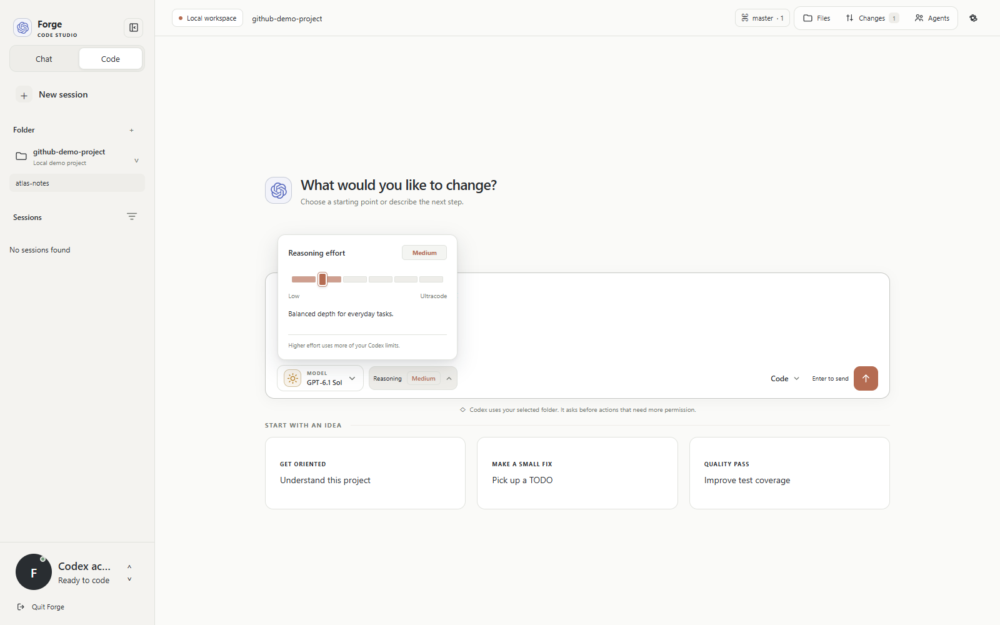
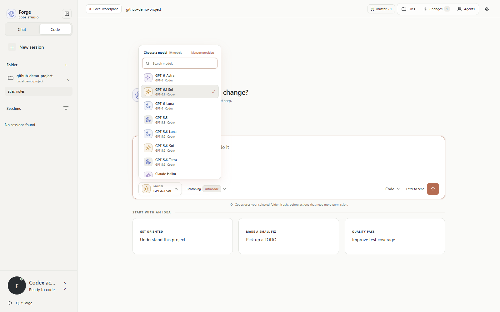

01 / CONNECT
Pick up where you are.
Already signed in to Codex? Forge picks up your local account. Bring Claude Code or a compatible custom provider along, too.
F
Your Codex accountConnected. Ready when you are.
Bring the thoughtful, Claude-inspired experience to your daily flow. Your AI, your files, and your task team, together in Forge.

You know that feeling when a tool just gets out of your way? Forge brings it to the projects on your desk.
Ask a question. Shape an idea. Make an edit. Give a focused task to a subagent. Everything happens in a quiet workspace that keeps the next step close.
Already signed in to Codex? Forge picks up your local account. Bring Claude Code or a compatible custom provider along, too.
Choose the model and reasoning depth your task needs. Or enable automatic routing and let Forge match GPT-6 to the scope.
Name an agent, choose a role, and define the scope. Keep delegated work organized with status filters, full task details, and pins.
See task assignmentBrowse actual project files, inspect highlighted diffs, and follow commands as they run. See what's changing without losing the conversation.
A warm canvas, clean controls, and room to breathe. Adjust colors, fonts, and spacing. Resize the sidebar, open the panel you need, and make the workspace feel like yours.

Good software should invite you in. Forge is free to download, MIT licensed, and open for you to explore, change, and contribute to.
Meet us on GitHubNo paid Forge tier. The whole workspace is yours.
Work directly with the folders on your computer.
Read it, remix it, make it better. That's the point.
Yes. Forge is 100% free and open source under the MIT license. Your connected AI provider's subscription or API charges are separate. Forge doesn't add an app subscription or model usage surcharge.
Yes. Sign in to Codex once in the Codex app or CLI. Forge uses that saved local account and works within your standard Codex allowance.
Forge can connect to your locally installed Claude Code runtime, which uses its own Claude sign-in. You can also add compatible providers such as OpenRouter or NVIDIA through a Responses API endpoint.
The packaged app is available for Windows x64. The installer bundles the runtime so you can get started without a global Node.js installation. Developers can also run the source from GitHub.
A thoughtful AI workspace. Freely yours.
Download Forge for Windows